The online enrolment channel — what it is, what everything in it is called, how the access gate actually decides, and the user story we put through the AI pipeline on stage.
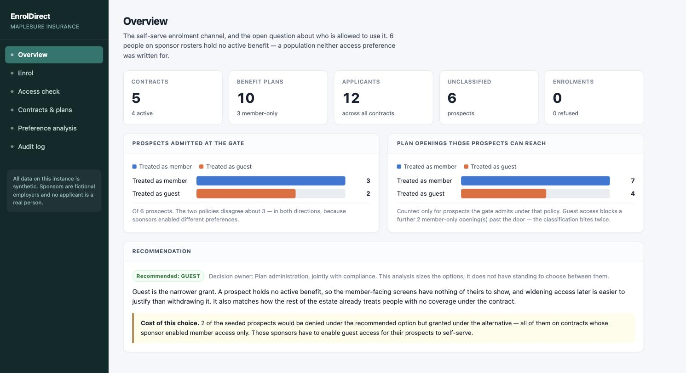
EnrolDirect refuses a whole population today — not by a rule anyone wrote, but by an omission — and US-2026-045 is the change that settles it.
EnrolDirect is MapleSure's self-serve enrolment channel. A plan member uses it to join or change benefits without calling the call centre. It is the only member-facing application of the three in this demo, which is why its refusal messages are customer-visible copy rather than internal diagnostics.
Access is governed by two access preferences that the plan sponsor agrees at contract inception. Those preferences live on the contract record in PolicyCore. EnrolDirect enforces them; it does not own them.
Because PolicyCore owns the preferences, changing what a preference means is a change to a contract between two systems — not a local edit. That is exactly why the prospect question needed an impact analysis before anyone wrote a line of code, and why this app ships an analysis surface at all.
FastAPI + uvicorn, pinned. It seeds its own contracts and applicants in-process and calls no other service at runtime, so it starts alone and a locked-down sandbox can host it. Nothing survives a restart and nothing is supposed to.
apps/run-enroldirect.sh # http://localhost:8083/ python -m pytest tests/test_regression_enroldirect.py
Port from ENROLDIRECT_PORT in .env, default 8083. A manager can also start,
stop and reset it from the console's /admin panel without a terminal.
| Surface | Endpoints | Answers |
|---|---|---|
| The gate runtime; the only part a member touches |
/api/eligibility/* /api/enrolments /api/plans |
May this applicant use the channel, and what can they take once inside? |
| The analysis decision support; no member sees it |
/api/analysis/* | Who consumes these preferences, how are they configured across the book, and what changes if prospects are classified one way or the other? |
Pure functions in impact.py over the seeded directory. No model call, so no cache key,
nothing to warm, and nothing that can be confidently wrong the way generated prose can. Same rule as the
pipeline's own diagram.py and acceptance.py.
policycore/enrolment/ answers when may this person join — waiting
periods, eligibility dates, life events, dependant age-out. enroldirect/ answers whether the
online channel is open to them at all. They compose; they do not overlap, and neither imports the
other. Someone can be eligible to join and still have no online access — that is a correct outcome, not a bug.
Declared in repos/enroldirect/preferences.py
| Constant | String value | Written for |
|---|---|---|
| MEMBER_ACCESS | "Online Enrolment - Member" | People already holding an active benefit under the contract, changing their own coverage. |
| GUEST_ACCESS | "Online Enrolment - Guest" | People with no active benefit who still have reason to enrol — retiree continuations, spousal transfers, sponsor-agreed exceptions. |
They arrive verbatim on the contract record from PolicyCore. An unknown preference is treated as
absent, and absent means not granted — so renaming one here without renaming it there
silently disables a gate rather than raising. unknown_preferences() reports the mismatch rather
than throwing: one unrecognised string must not take the whole channel down.
Declared in repos/enroldirect/applicants.py. Category is
derived upstream by plan administration — EnrolDirect is told what someone is, it does not decide.
| Constant | People | On roster? | Active benefit? | Has a preference? |
|---|---|---|---|---|
| MEMBER | 4 | yes | yes | yes — Member |
| GUEST | 2 | no | no | yes — Guest |
| PROSPECT | 6 | yes | no | none |
A prospect is not a halfway state on the way to becoming a member — it is a population the sponsor has already accepted onto the roster who has not taken up coverage. Treating them as a guest (a stranger to the contract) is uncomfortable; treating them as a member (someone with coverage to change) is inaccurate.
EligibilityDecision in eligibility.py — returned by
POST /api/eligibility/check
| Field | Meaning |
|---|---|
| granted | Did every gate open. |
| category | The applicant's own category, as received. |
| requiredPreference | What was consulted for this applicant, enabled or not. None when the category resolved to no preference at all. |
| authorisingPreference | What actually opened the gate. None on every denial. |
| reasons | Why, in customer-visible English. Never a bare boolean. |
Today they coincide for everyone admitted, because only members and guests are admitted at all.
They are still kept apart, because DocumentHub words the confirmation pack from
authorisingPreference and NightlyBatch reconciles on it. The moment those two diverge — which is
exactly what US-2026-045 causes — a single field would be silently wrong somewhere downstream.
| Term | Meaning |
|---|---|
| planCode | PL-1001 … — one plan under one group contract. |
| memberOnly | The plan attaches to existing coverage, so there is nothing for it to attach to for someone holding none. 3 of the 10 seeded plans. |
| COVERAGE_TIERS | Single, Couple, Family — cheapest first; the order is load-bearing. Not every plan is sold at every tier, and an absent tier is real configuration, not a lookup failure. |
US-2026-045 is the user story file, stories/US-2026-045.md;
AMS-1045 is its ticket key on the board, derived from the number rather than the prefix.
enroldirect-prospect-access is the S3 target id and enroldirect_prospect_access its
replay cache namespace — never rename that one, every committed recording resolves through it. Seeded data:
MS-2001…MS-2005 are the five group contracts, AP-4001…AP-4012
the twelve applicants.
POST /api/eligibility/check runs three gates. All three have to open, and the order is fixed.
preference_for_category() returns None, and that is where a prospect is refused today.NO_CHANNEL_ACCESS — refused at
the door, not at the catalogue.Every category would still resolve to the right preference; every preference check would still work. The
only broken case is a lapsed contract that still has the preference enabled — which is precisely the case
nobody thinks to write a test for. MS-2005 exists in the seed for this reason, and both the unit
and regression suites pin the ordering against it explicitly.
POST /api/enrolments runs four checks: the access gate above (reused), then the plan is on that
applicant's contract, then the plan is open to their effective category, then the plan is sold at the
requested tier.
An enrolment path carrying its own copy of the access rules is how a channel ends up admitting someone the gate would have turned away. The two copies drift on the first change to either.
The applicant asked a valid question and got a valid, recorded answer. Turning "you may not enrol in this plan" into an HTTP error would lose the audit entry that says so and why. Refusals are kept, not discarded: "how many failed" is a number nobody can act on; "how many failed because the plan needed existing coverage" changes a decision.
Because some plans are memberOnly, the prospect question decides two things, and the
two effects run in opposite directions.
| What it decides | Which option reaches further | |
|---|---|---|
| At the gate | How many prospects are admitted at all | Member admits more |
| At the catalogue | How much of the catalogue those admitted can reach | Member reaches more |
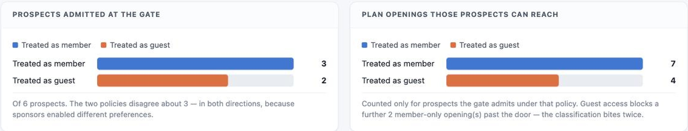
Applicant.__post_init__ rejects two combinations outright rather than coercing them to the
"obviously intended" category: MEMBER with no active benefit (that is a prospect, mislabelled
upstream) and PROSPECT holding an active benefit (that is a member, not yet promoted).
Both would grant or deny the wrong access silently. Coercing them hides an upstream data quality problem inside the system that consumes it — and the consuming system is the one that gets blamed for the wrong outcome. Failing loudly at construction puts the error next to the bad record.
The gate, exposed directly: pick a seeded applicant, run the three gates, read the decision and its reasons. This is the screen that shows the defect in one click.
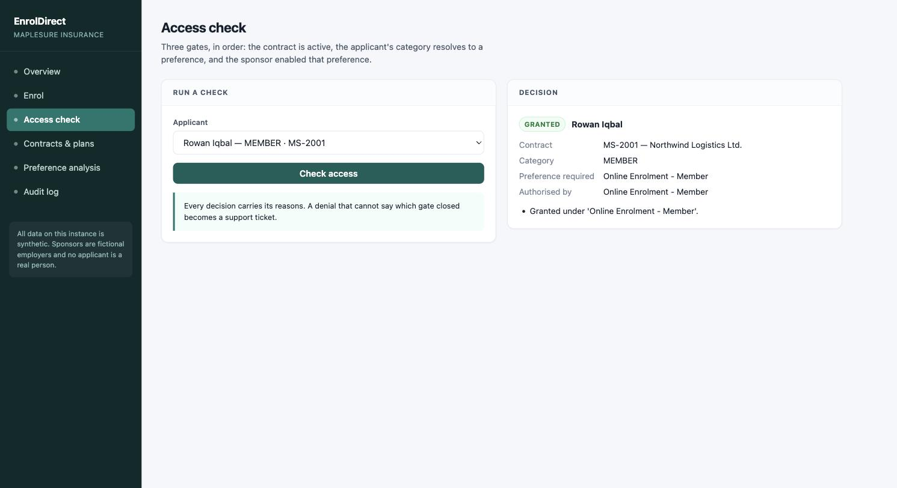
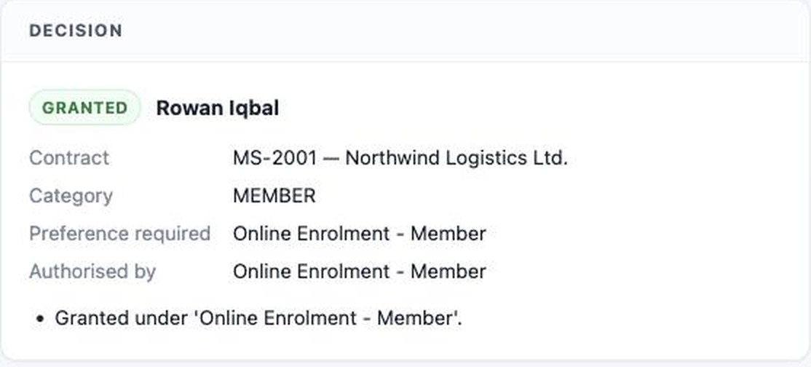
authorisingPreference records which preference did the work.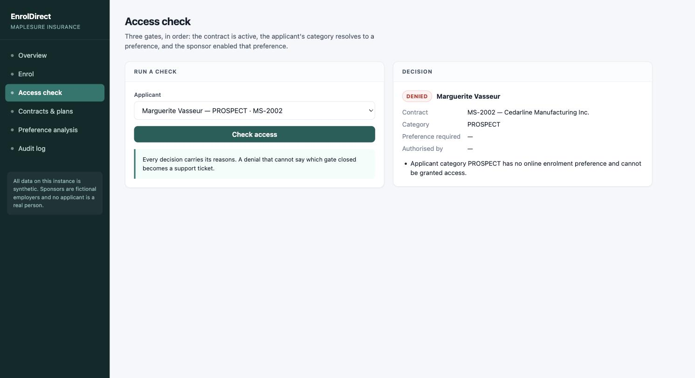
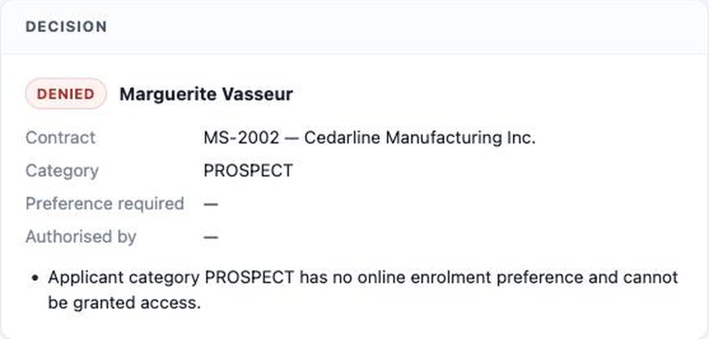
requiredPreference is empty, because no preference resolves for her category at all.
The journey a member actually takes: identify yourself, see the catalogue your contract offers you, pick a tier, submit. The access panel on the left is the same gate as the previous screen — reused, not reimplemented.
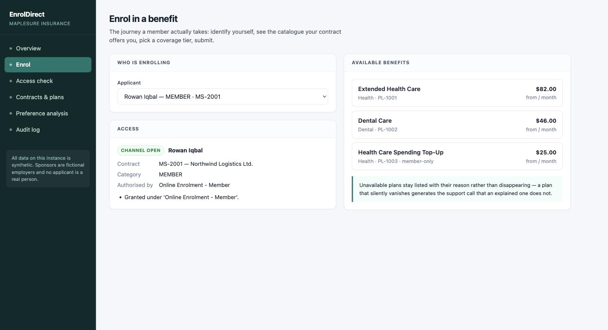
PL-1003, a member-only
top-up — it attaches to the health benefit they already hold.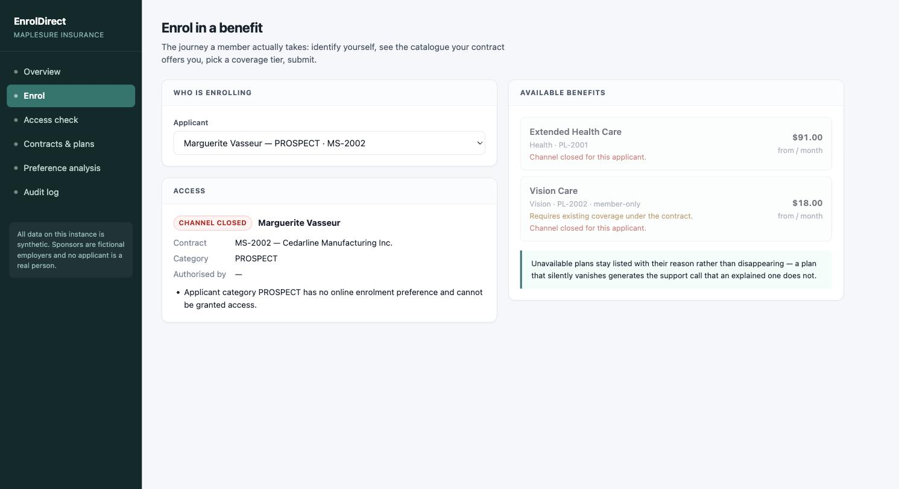
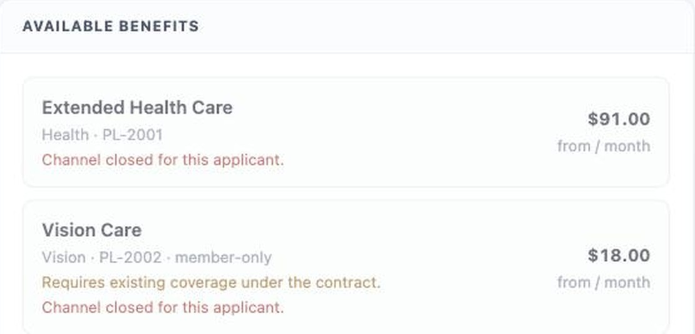
Channel closed for this applicant comes from the gate — it applies to every plan on the contract.
Requires existing coverage comes from the plan —
memberOnly, and it would apply to a guest who had been admitted.
Keeping them apart makes the two-bite effect visible in the product, not just in the analysis: once US-2026-045 admits this prospect as a guest, the first line disappears and the second one stays.
A decision without a reason is a defect. This is member-facing — the refusal text is the product for anyone refused, and a denial that cannot name the gate becomes a phone call.
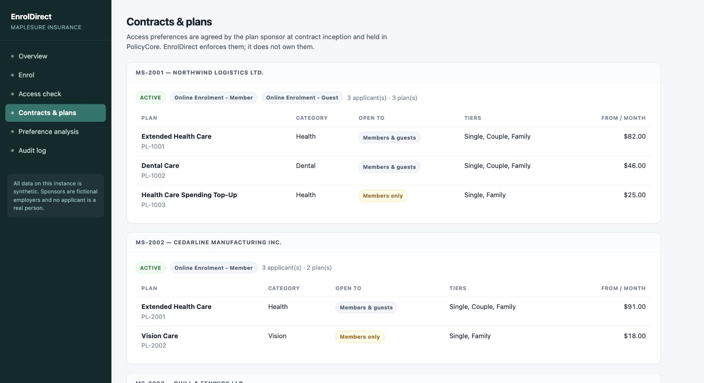
The highlighted rows are what makes the classification bite twice. Premiums are synthetic monthly CAD amounts, not a rate table. Lapsed MS-2005's one plan is omitted — gate 1 closes before anyone reaches its catalogue.
| Plan | Contract | Category | Open to | Tiers | From |
|---|---|---|---|---|---|
| PL-1001 | MS-2001 | Health | all | Single / Couple / Family | $82 |
| PL-1002 | MS-2001 | Dental | all | Single / Couple / Family | $46 |
| PL-1003 | MS-2001 | Health | member-only | Single / Family | $25 |
| PL-2001 | MS-2002 | Health | all | Single / Couple / Family | $91 |
| PL-2002 | MS-2002 | Vision | member-only | Single / Family | $18 |
| PL-3001 | MS-2003 | Health | all | Single / Couple / Family | $77 |
| PL-3002 | MS-2003 | Life | all | Single | $12 |
| PL-3003 | MS-2003 | Disability | member-only | Single | $34 |
| PL-4001 | MS-2004 | Health | all | Single / Couple / Family | $88 |
Every combination of enabled preferences appears at least once, and prospects sit on contracts whose preferences point in opposite directions — so the comparison has genuine disagreement to report. A seed where both options produced the same answer everywhere would make the analysis look decisive and prove nothing.
| Contract | Status | Enabled | What it proves |
|---|---|---|---|
| MS-2001 Northwind | Active | Member + Guest | Its prospect is granted either way — which makes the two options look equivalent until you look further. |
| MS-2002 Cedarline | Active | Member only | Its 2 prospects are granted under Member and denied under Guest. |
| MS-2003 Quill & Fenwick | Active | Guest only | The disagreement runs the other way here. |
| MS-2004 Talus | Active | none | Nobody is granted at all — proof the analysis reads contract configuration, not category alone. An empty list is real configuration, not missing data. |
| MS-2005 Harbourline | Lapsed | Member + Guest | The gate-ordering case. Both preferences still configured; everyone must still be denied. |
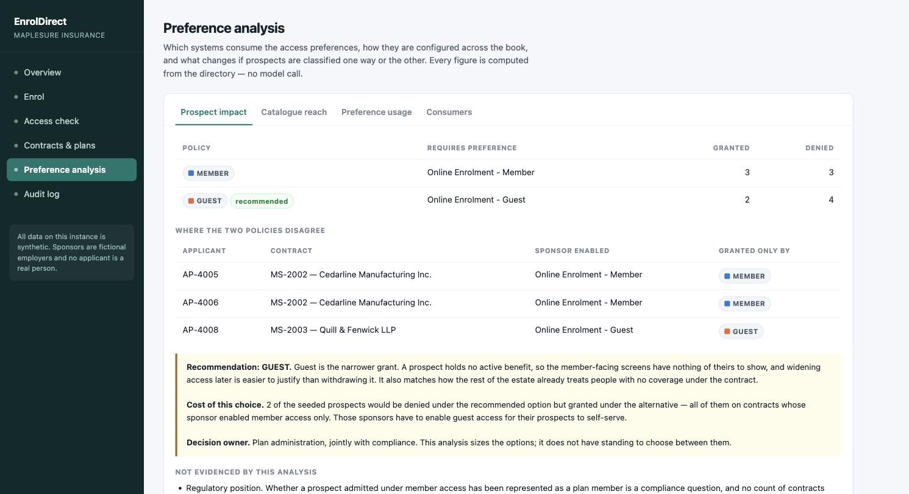
Why Guest. A prospect holds no active benefit, so the member-facing screens have nothing of theirs to show; widening access later is easier to justify than withdrawing it; and it matches how the rest of the estate already treats people with no coverage under a contract.
2 of the seeded prospects would be denied under the recommended option but granted under the alternative — all of them on contracts whose sponsor enabled member access only. Those sponsors have to enable guest access for their prospects to self-serve.
Decision owner: plan administration, jointly with compliance. The analysis sizes the
options; it does not have standing to choose between them. implemented: false until the story runs.
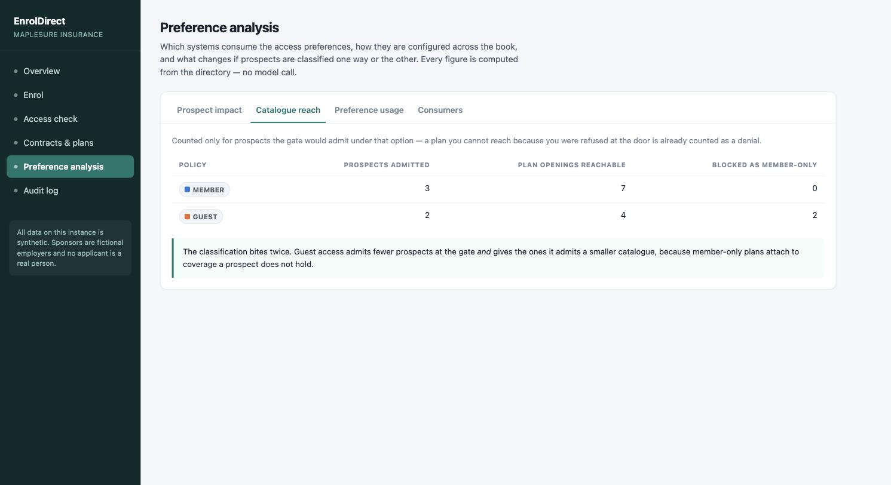
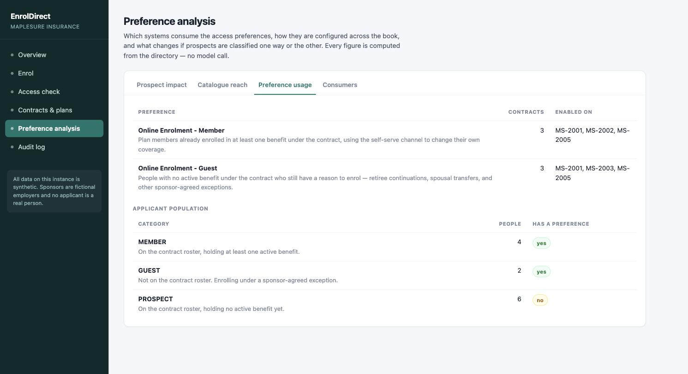
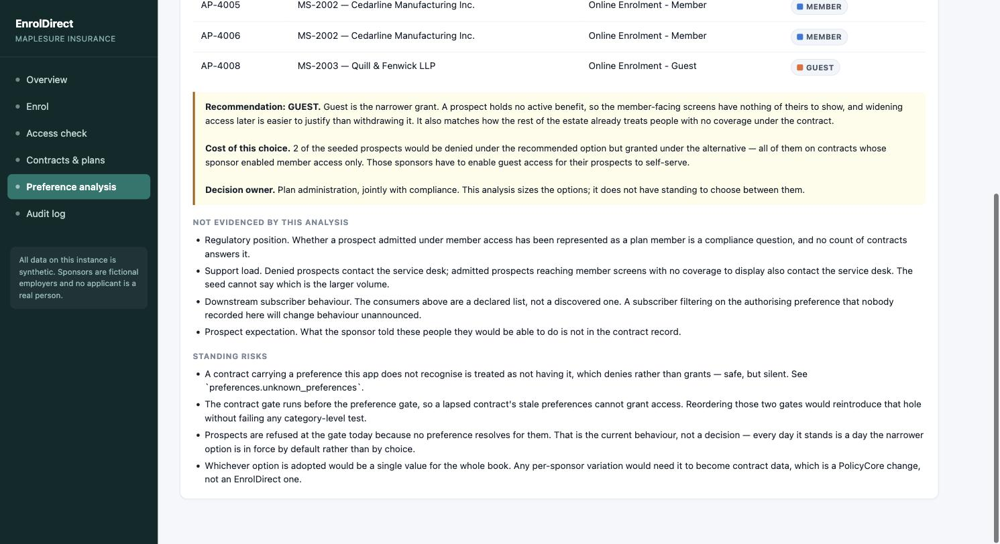
unproven_claims()."Prospects are refused at the gate today because no preference resolves for them. That is the current behaviour, not a decision — every day it stands is a day the narrower option is in force by default."
The analysis recomputes from current configuration on every request rather than serving a stored conclusion — an analysis surface, not a document. It cannot go stale relative to the rules it mirrors, and the regression suite pins it to them so the two cannot drift.
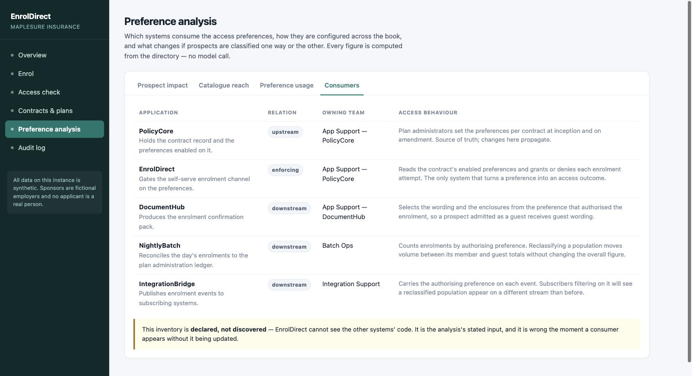
All five stay in the inventory — the estate map is not the ticket list. Only one of them has to author behaviour it has never had:
| System | Code change? | Why |
|---|---|---|
| DocumentHub | Required | It words the confirmation pack from the authorising preference alone. A rostered person admitted under guest access is a recipient neither existing pack was written for. |
| NightlyBatch | No | Aggregates by authorising preference into buckets it already has. Its numbers move; its code does not. |
| IntegrationBridge | No | Carries the preference through on an existing field. |
The check used to return every system the change touched — three tickets, two of them fictional, and
nobody notices they are fictional until three teams have triaged them. A "no" is now recorded with its
rationale (changeRequired + changeRationale), auditable rather than an omission.
| If prospects are… | Packs needing new wording | Consequence if DocumentHub is unchanged |
|---|---|---|
| Members | 3 | The member pack refers to coverage the recipient already holds. A prospect holds none, so the paragraph describes benefits that do not exist. |
| Guests (rec.) | 2 | The guest pack states no member record is held and encloses an identity form. Every recipient is on the sponsor's roster, so both are false and the form has to be withdrawn by hand. |
Computed by impact.document_impact() — no LLM. Both options are priced, not just the
recommended one; pricing only the option you advocate is advocacy. It rides inside
prospect_impact()["documentImpact"] rather than on an endpoint of its own, because a downstream
consequence served separately is one a reader can finish the analysis without ever having seen.
DocumentHub is S3's fourth target and the only one registered by a dropped-in .s3targets.json
manifest rather than declared by hand — the cross-team check named it, the repo was dropped into
repos/, and it became automatable with no edit to the target list.
Its own baseline is a wrong document, not a failure: the seeded record
ENR-20260804-005 — on the roster, admitted under guest access, exactly what US-2026-045 starts
producing — falls through to the guest pack and is told we hold no member record for them. Nothing raises and
nothing logs.
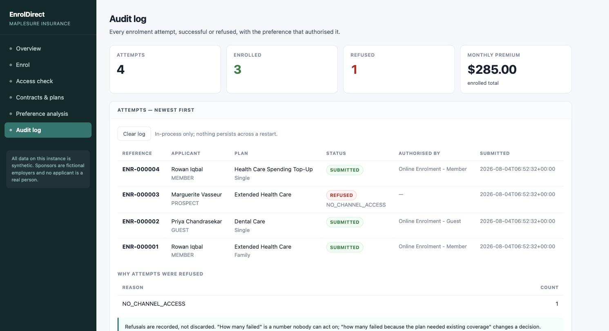
NO_CHANNEL_ACCESS and no authorising preference.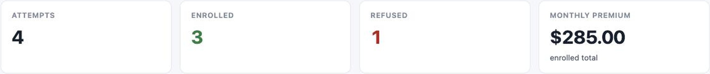
| Code | Refused at |
|---|---|
| NO_CHANNEL_ACCESS | The gate — the channel is closed to this applicant. |
| PLAN_NOT_ON_CONTRACT | The plan is not offered under their contract. |
| MEMBER_ONLY_PLAN | The catalogue — the plan needs existing coverage. |
| TIER_NOT_OFFERED | The plan is not sold at the requested tier. |
AC2 of the user story pins these: every existing refusal code keeps its current meaning, and a
prospect refused because their sponsor did not enable the resolved preference is refused at the
gate (NO_CHANNEL_ACCESS), not at the catalogue.
The log is in-process and dies with the process (POST /api/enrolments/reset clears it for a
second rehearsal). The sandbox constraint means a datastore is a dependency this app cannot take — but that
makes the enrolment log unsuitable as the audit record of last resort. Access decisions are the
evidence trail if a refusal is disputed. That is a gap in the current design, not a feature.
Title: Prospect Member Eligibility Check For Online Enrolment · Requested by MapleSure Group Retirement Product · Application: EnrolDirect
Determine whether a prospect member is eligible for online enrolment, and return that determination through the channel's existing eligibility check — so the systems downstream can act on a real answer instead of a refusal.
A member who is on the plan sponsor's contract roster, has not enrolled in any plan, and holds no active
benefit. EnrolDirect already has a name for this population — PROSPECT — and already distinguishes it
from the two the access preferences were written for.
| AC | Given / When / Then |
|---|---|
| AC1 eligible |
Given a member on the contract roster holding no active benefit, when they pass every gate, then the check reports them eligible and the decision names the preference that admitted them. |
| AC2 not eligible |
Given the same member, when they fail any one gate, then the check reports them not eligible and the decision carries the reason. Every existing refusal code keeps its current meaning. |
| AC3 the rules |
The determination is built from the eight named rules opposite — the story states them, so the model is not left to invent an architecture. |
The client's own intake artifact is a user story (business objective, target population, Given/When/Then),
so the vocabulary follows it end to end: stories/, US-YYYY-NNN,
/api/s3/story. The board opens it as issue type Story with no id prefix on the card.
At the gate it decides how many prospects are admitted. Past the gate it decides how much of the benefit catalogue those admitted can reach, because member-only plans attach to existing coverage. The two effects run in opposite directions, and the change is not complete if only the first is made.
| Not changed | Why |
|---|---|
| A third access preference | Would change what PolicyCore stores and what every consumer reads. |
| Per-contract variation | Same — it would have to become contract data, a PolicyCore change. |
| impact.py | The analysis is the input to this change, not part of it. It must keep sizing both options after one is adopted — a comparison reporting only the option in force could not answer "what is this costing us", which is the question that reopens the decision. |
| static/index.html | The console must keep rendering with no edits. |
| tests/test_regression_enroldirect.py | The independent check that the story broke nothing. Must pass unchanged, before and after. |
The story does not just ask for an outcome; it names the shape. This is the part that makes the run reproducible — the model is not left to invent an architecture, and each rule is checkable in the diff.
applicants.py, set to treat prospects
as guests, sitting alongside the two options it selects between. Module-level configuration, not a
per-call parameter — a caller that could pass its own would be choosing its own access rules.preference_for_category resolves a prospect through that policy. Members and guests keep
resolving exactly as they do now, and it stays the single place a category becomes a preference.effective_category returns the category an applicant is treated as for the rest of the
journey. Resolved once and reused, not re-derived at each call site.authorisingPreference keeps meaning the preference that actually opened the gate.| Rule | The failure it prevents |
|---|---|
| 1 · module-level, not per-call | A caller that could pass its own policy would be choosing its own access rules. The gate enforces one policy. |
| 2 · one lookup, one place | preference_for_category was written as a single lookup rather than a branch repeated at each call site specifically so that whatever was eventually decided would land in exactly one function. |
| 3 · resolved once, reused | Deriving the effective category again at each call site is how the catalogue and the gate end up disagreeing about the same person. |
| 4 · gate order unchanged | A lapsed contract must still deny a prospect. The policy must not become a way past gate 1. |
5 · authorisingPreference keeps its meaning | It is what DocumentHub words the pack from and what NightlyBatch reconciles on. A prospect admitted as a guest must be recorded as such. |
| 6 · reuse the gate | Two copies of the access rules drift on the first change to either. |
| 7 · catalogue filters on the same value | The second bite. Make only the first change and the story is half-done. |
| 8 · members and guests unaffected | If the change moved a member's outcome it would not be contained to the population it was scoped to. |
repos/enroldirect/eligibility.py — before
def preference_for_category(category: str) -> str | None:
if category == MEMBER:
return MEMBER_ACCESS
if category == GUEST:
return GUEST_ACCESS
return None # ← a prospect is refused here
after
def preference_for_category(category: str) -> str | None:
if category == MEMBER:
return MEMBER_ACCESS
if category == GUEST:
return GUEST_ACCESS
if category == PROSPECT:
return (MEMBER_ACCESS if PROSPECT_POLICY == TREAT_AS_MEMBER
else GUEST_ACCESS)
return None
and the policy it reads, in applicants.py
# The two policies available for prospects. TREAT_AS_MEMBER = "MEMBER" TREAT_AS_GUEST = "GUEST" PROSPECT_POLICIES: tuple[str, ...] = (TREAT_AS_MEMBER, TREAT_AS_GUEST) # The current policy in force for prospects. PROSPECT_POLICY = TREAT_AS_GUEST
and the new resolver plus the new decision field
def effective_category(category: str) -> str:
"""The category an applicant is treated as onward."""
if category == PROSPECT:
return PROSPECT_POLICY
return category
@dataclass(frozen=True)
class EligibilityDecision:
...
authorisingPreference: str | None
prospectPolicyApplied: str | None = None
The target declares six core files. Only four of them are editable — and that asymmetry is the point of this target.
| File | In prompt | Editable |
|---|---|---|
| applicants.py | yes | yes |
| eligibility.py | yes | yes |
| enrolments.py | yes | yes |
| main.py | yes | yes |
| impact.py | yes | no |
| preferences.py | yes | no |
The model has to read impact.py to understand what the story means — it is the analysis the
change acts on. It must not edit it. Core-file recall gets it into the prompt; the codegen allowlist keeps it
out of the diff; and this target carries its own _validate_enroldirect_file_set, which fails loudly if
a read-only file comes back modified.
Its baseline is a removal. The checked-in source is the state after the impact analysis and
before the gate acts on it. Nothing is broken; something is missing, and the missing thing has already
been sized. The pristine copy lives in .baseline/ and
demo/reset_s3_enroldirect.sh restores it by copying that snapshot back.
rel_path: repos/enroldirect/eligibility.py old: if category == PROSPECT: new: if category == GUEST:
Redirects the prospect branch to match guests, so prospects fall through to no preference and are refused again — silently reverting the story at the gate. The generated tests are expected to catch it. Re-verify the snippet after any re-record: one that stops matching fails silently, and the "the tests caught it" claim never gets made.
tests/test_regression_enroldirect.py is checked in, human-authored, and named by no
testgen or codegen allowlist — tests/test_s3_testrun.py asserts that. It lives outside the target
root because anything ending .py under one joins the codegen candidate pool, and a suite the
pipeline can rewrite is not an independent check of anything.
Every assertion holds before and after the story. It pins the ground that must not move, not the answer under debate:
| It asserts | Because |
|---|---|
| The contract gate runs before the preference gate | Reversing them lets stale configuration on a dead contract grant access, and every category-level assertion would still pass. |
| Members' and guests' outcomes, named applicant by applicant, as absolute values | A comparison of two things the story changes together proves nothing. |
| The gate matches the contract configuration for classified categories | Pins impact.py's model to the rules it claims to mirror, so the two cannot drift in either direction. |
| The analysis still reports disagreement in both directions | One column, or none, and the comparison feeding the recommendation has quietly stopped working. |
| Only one other team is owed work | Nobody notices extra tickets are fictional until three teams have triaged them. |
| Nothing the gate refuses can be enrolled, by any route | The enrolment path must not grow its own copy of the access rules. |
Assertions go through HTTP and read fields off JSON rather than constructing decisions directly, so adding a field to the decision payload — which the story does — is not a regression. Nothing asserts the absence of a field.
Applying rewrites the target's .py files, but a running uvicorn keeps serving the code it
imported at startup. Without a restart the console says "the app now has this capability" while :8083 still
answers with the baseline — which reads to the audience as "the change did nothing".
After Apply, re-run the Access check for AP-4005 Marguerite Vasseur. Granted, authorised by
Online Enrolment - Guest, with the policy recorded — that is the beat. A failed restart is
reported as such and never dressed up as a green banner.
MapleSure Insurance is a fictional demo insurer; all contracts, sponsors, applicants, plans and premiums here are
synthetic. Screenshots captured from a local instance, 2026-08-04 · source
docs/ENROLDIRECT_WALKTHROUGH.html · companions: docs/ENROLDIRECT_APP.pdf,
repos/enroldirect/ARCHITECTURE.md, DESIGN.md.